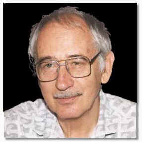

 |
В.Ф.ТурчинФеномен науки
|
Турчин В.Ф.
Феномен науки: Кибернетический подход к
эволюции.
Изд. 2-е – М.: ЭТС. — 2000. — 368 с.
ISBN 5-93386-019-0
Автор книги — выдающийся ученый, физик и кибернетик, создатель языка Рефал и нового направления в программировании, связанного с преобразованием программ. Известен широкому кругу отечественных читателей как составитель сборника “Физики шутят”. Вынужденный покинуть Родину, с 1977 года он живет и работает в США.
В этой книге В.Ф.Турчин излагает свою концепцию метасистемного перехода и с ее позиций прослеживает эволюцию мира от простейших одноклеточных организмов до возникновения мышления, развития науки и культуры. По вкладу в науку и философию монография стоит в одном ряду с такими известными трудами как “Кибернетика” Н.Винера и “Феномен человека” П.Тейяра де Шардена.
Книга написана ярким образным языком, доступна читателю с любым уровнем подготовки. Представляет особый интерес для интересующихся фундаментальными вопросами естествознания.
Замечания по электронной версии книги присылайте, пожалуйста, членам редакционного совета. Спасибо!
Редакционный совет: А.В.Климов, А.М.Чеповский, В.С.Штаркман